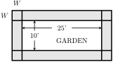

Nyx is making a blanket out of 3’’ \(\times\) 3’’ squares of fabric in the middle and long strips of fabric for the border. They have decided to make the blanket 7 squares longer than it is wide. So, for example, if they use 10 squares across, they will use \(10+7=17\) squares down. They will do a 4’’ border on the top and bottom of the blanket but only a 2.5’’ border on the left and right.
What size blanket will Nyx make if they use 10 squares across, as shown in the picture? The width of the blanket will include the left border (2.5’’), the width of the 10 squares ( \(10 \times 3"\) ), and the right border (2.5’’), so the blanket will be
wide. Notice that we add the width of the border twice so instead of adding 2.5’’ twice, we can add \(2 \times 2.5" = 5"\) once. We can then simplify our calculation to
The length of the blanket will include the top border (4’’), the length of the \(10+7=17\) squares ( \((10+7) \times 3"\) ), and the right border (4’’), so the blanket will be
\begin{align*}
S \amp= \text{ number of squares (squares)}\sim \text{indep}\\
W \amp= \text{ width of blanket (inches)}\sim \text{dep}\\
L \amp= \text{ length of blanket (inches)}\sim \text{dep}
\end{align*}
\begin{equation*}
\text{width: }S \times 3 + 5 = W.
\end{equation*}
Let’s write the dependent variable on the left-hand side of the equation, and use algebraic notation to write \(3S\) instead of \(S \times 3\text{.}\) Our equation is then
But, wait! We could have calculated the length differently. We can think of the length as having three parts: \(3S\) which is the length of the \(S\) squares, \(3 \times 7 = 21\) which is the length of the additional 7 squares, and \(2 \times 4 = 8\) which is the length of the top and bottom borders. Breaking into these pieces we get a new equation for the length:
Does this new equation make sense? The 3’’/square represents the length of each square Nyx uses. The 29’’ is the part of the length of the 7 squares and top/bottom borders combined. Okay.
Nyx has decided after they finish the blanket, they will make it the top layer of a light comforter. For that, Nyx will use plain fabric for the bottom layer and use some fiberfill to get a thickness of 2 inches in between. How much fiberfill do they need?
To start, Nyx needs to know the area of the blanket. The area is the length times the width. For the baby blanket that was 10 squares across, the width was 35’’ and the length was 59’’ so the area was \(35 \times 59 = 2065\) square inches.
We can write an equation for the area of the blanket using the variables
\begin{align*}
S \amp= \text{ number of squares (squares) }\sim \text{indep}\\
A \amp= \text{ area of blanket (square inches)}\sim \text{ dep}
\end{align*}
We know that the area is the length times the width, so putting in our formulas we get
\begin{equation*}
A = (3S+29)(3S+5)
\end{equation*}
To get a fluffy feel without being too heavy, Nyx has decided to use a premium cluster fiberfill to get 2″ thick. (Nyx will stitch the fill along every fabric join and at intervals along the border, in case you were wondering, because nobody likes a lumpy blanket.) The clerk at the fabric store said that Nyx will need 14 ounces of fiberfill for every 1000 square inches of area. Notice that
Urban community gardens are catching on. What was once an abandoned lot down the block is now a thriving 10’ \(\times\) 25’ vegetable and berry garden for the neighborhood. (Remember ’ stands for “feet,” so the garden is 10 feet wide and 25 feet long.) One neighbor volunteered to donate gravel to make a path around the garden. The path will be 3 inches deep and the same width all around.

Story also appears in 2.3 Exercises 2.4 Exercises and 3.5 #4
Suppose for the moment that the path will be 4 feet wide. Calculate the area of the path. Here’s one way to do it: first, find the area of the outer rectangle, then subtract the area of the garden itself.
Hint: the length of that outer rectangle includes the 25 feet of garden plus the width of the path on each side. Same for the width of that outer rectangle.
Actually, they aren’t sure how wide the path should be and how much gravel they can get. Let’s write \(W\) = width of path (feet). Explain why the width of the outer rectangle is \(10+2W\) and the length of the outer rectangle is \(25+2W\text{.}\)
Let’s write \(G\) = amount of gravel (cubic feet). Write an equation for \(G\) as a function of \(W\text{.}\) Hint: multiply your answers to (a) and (e).
Emery is selling custom printed laptop and water bottle sticker packs. He is trying to understand how the number of sticker packs people will buy depends on the price. There’s a fancy name for the number of things people will buy – it’s called the demand. Emery knows from experience that if he prices sticker packs at $10, then the demand is 200 sticker packs, but that the demand drops by 15 sticker packs per dollar increase in price. He identifies the variables
\begin{align*}
P \amp= \text{ price of sticker packs (\$) }\sim \text{ indep}\\
D \amp= \text{ demand (sticker packs) }\sim \text{ dep}
\end{align*}
In the previous problem, Emery was selling sticker packs. Using the variables
\begin{align*}
P \amp= \text{ price of a sticker pack (\$) }\sim \text{ indep}\\
D \amp= \text{ demand (sticker packs) }\sim \text{ dep}
\end{align*}
Emery calculated that (spoiler alert)
\begin{equation*}
D = 350-15P
\end{equation*}
Notice that the intercept (price $0) of 350 things doesn’t really make any sense in the problem. Emery wants to figure out a price for sticker packs so that he can take in as much money as possible. There’s a fancy name for that too – the total amount of money Emery takes in is called the total revenue.
Make a table showing how revenue depends on price, including \(P= 10, 11, 12, 13\text{.}\) Hint: use your answers for demand from the previous problem.
Ximena is trying to get some homework done so she wants to create a custom 24 ounce energy drink that has some caffeine, but not too much. She has two available drinks that she can mix:
If Ximena uses 10 ounces of Rehab Monster, how many ounces of Snapple Peach Tea will she use (remember she wants 24 ounces total) and how much caffeine will that mixture have?
Write an equation describing how the total caffeine is a function of the amount of Rehab Monster. Hint: How can we write the amount of Snapple Peach Tea in terms of \(M\text{?}\)
Roy is mounting a \(69'' \times 48''\) rectangular canvas painting on an aluminum composite panel. The panel covers the entire back of the painting and sticks out width \(W\) inches around all four sides of the canvas.
Suppose for the moment that the frame creates a border 3 inches wide ( \(W = 3\) ). Calculate the area of the aluminum panel. Note: the area is the area of the outside square, not just the border.
Roy has not decided yet how wide the frame border should be. Let’s write \(W = \text{width of the frame border (inches)}\text{.}\) Explain why the width of the outer frame is \(69 + 2W\) and the length of the outer frame is \(48 + 2W\text{.}\)
Viviana is selling bottled cold brew coffee at a local weekend market. She is trying to understand how the number of bottles people will buy depends on the price per bottle. Viviana knows from experience that if she prices cold brew at $4.00 per bottle, the demand is 150 bottles, but for every $1 increase in price, the demand drops by 20 bottles. She writes the variables:
\begin{align*}
P \amp= \text{price of a cold brew bottle (\$) }\sim \text{indep}\\
D \amp= \text{demand (bottles) }\sim \text{dep}
\end{align*}
Make a table showing how revenue depends on price, including \(P = 4.00, 4.50, 5.00, 5.50\text{.}\) Hint: use your answers for demand from the previous problem.
Write an equation for the revenue in terms of price, using \(R = \text{total revenue (\$) }\sim \text{dep}\text{.}\) Hint: use your final equation for demand \(D\) from the previous problem and the fact that \(\text{Revenue}= \text{Price}\times \text{Demand}\text{.}\)
Květa is working in a botany lab and needs to prepare a 30-gallon batch of liquid nutrient solution for a greenhouse experiment. She has two brands of concentrates available to mix:
Hofner’s: contains 12 grams of nitrogen per gallon.
\begin{align*}
H \amp= \text{amount of Hofner's concentrate used (gallons) }\sim \text{indep}\\
N\amp= \text{total mass of nitrogen in the mixture (grams) }\sim \text{dep}
\end{align*}
If Květa uses 10 gallons of Hofner’s concentrate, how many gallons of DeBoer’s concentrate will she use (remember she needs 30 gallons in total), and how many total grams of nitrogen will that mixture contain?
If she uses 18 gallons of Hofner’s concentrate, how many gallons of DeBoer’s concentrate will she use, and how many grams of nitrogen will that mixture contain?
Write an equation describing how the total grams of nitrogen \(N\) is a function of the amount of Hofner’s concentrate \(G\text{.}\) Hint: How can we express the amount of DeBoer’s concentrate used in terms of \(H\text{?}\)